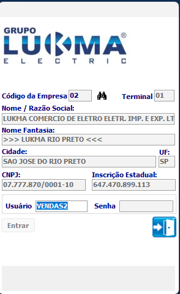
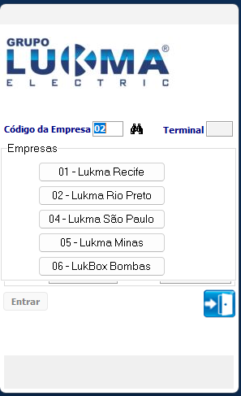

Como trocar a empresa.
Este tutorial explica como trocar a empresa para efetuar login na empresa desejada.
Passo a passo
-
Antes de efetuar o login sistema Lukma.
Você tem dois campos um com o código da empresa e ou uma lupa aonde você pode selecionar ele e mostrará as empresas.

-
Segue imagem mostrando quando seleciona a lupa.

-
Após selecionar a empresa desejada fazer o login igual mostrado no Tutorial do Login.
Em caso de erro de acesso, verifique seus dados ou entre em contato
com o suporte.